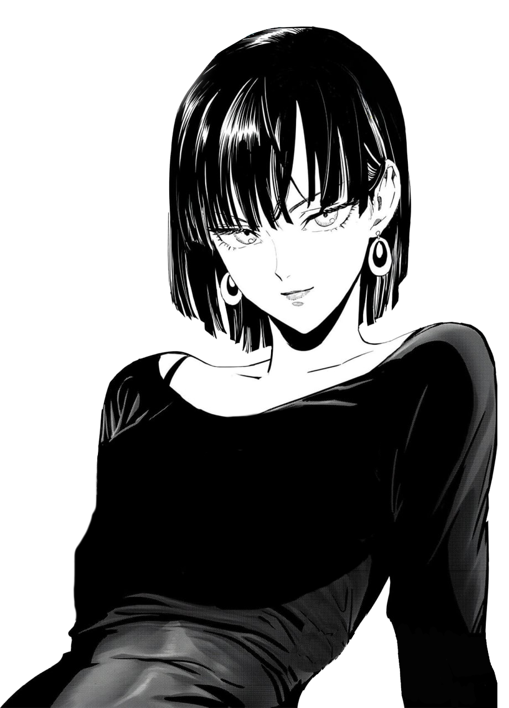

FUBUKIFUBUKIFUBUKIFUBUKIFUBUKI
instagram: borisbessonov_
フブキ
Enhanced Fubuki (フブキ, Fubuki; Viz: Blizzard), also known by her hero alias Blizzard of Hell (地獄のフブキ, Jigoku no Fubuki; Viz: Hellish Blizzard) is the B-Class Rank 1 professional hero of the Hero Association.
Age: 23 / Abilities: Psychokinesis, Telepathy
Enhanced Endurance: During her fight against Do-S, Fubuki was able to endure the full force of the monster's whip, which otherwise sent several other heroes flying a considerable distance.
Enhanced Fubuki is her real name. The origin of her hero name comes from her raging winds that give birth to a visage of hell. As a result, "Hell" was added to her name.